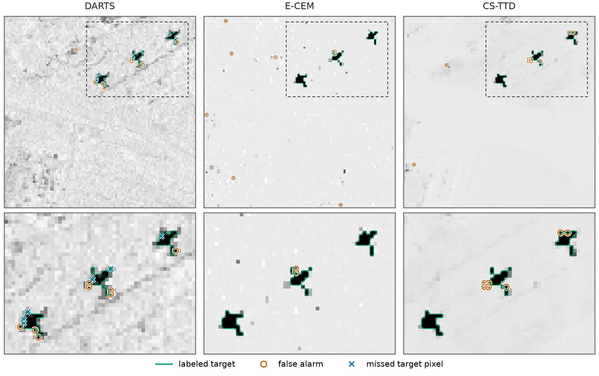
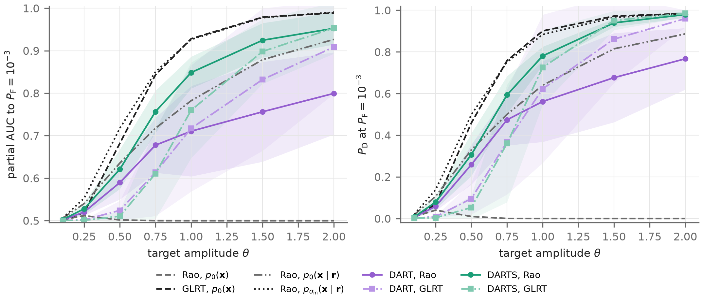
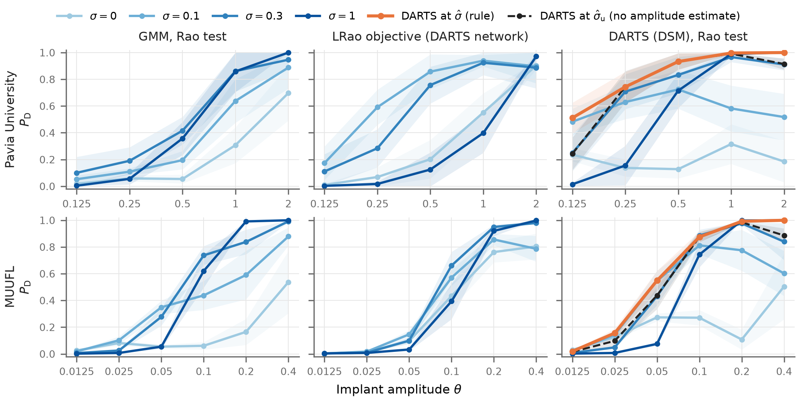
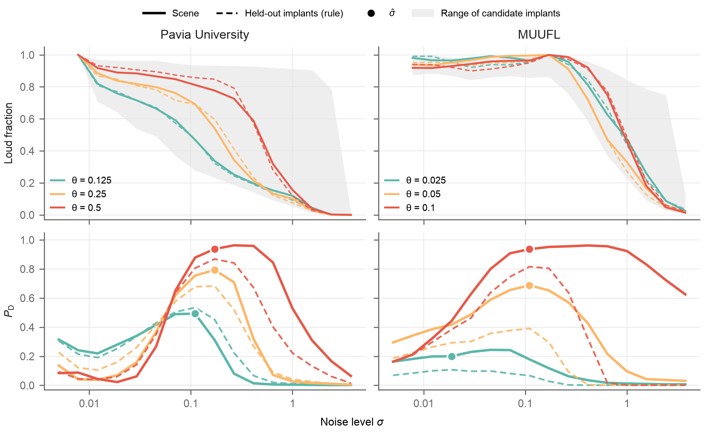

We detect a target of known signature and unknown amplitude in a background whose distribution is unknown and need not be Gaussian. We learn the background score, the gradient of its log-density, by denoising score matching, a central component of diffusion models, and plug it into the one-sided Rao test, which needs the background only through that score. This test is locally optimal, that is, best for weak targets. Conditioning the score on neighboring pixels, and choosing its smoothing level, which tunes the test to a target amplitude, extend its usefulness to stronger targets. The resulting model, DARTS, chooses that level without labels and attains the highest detection probability among the compared detectors on three of four hyperspectral scenes with real or implanted targets.
- A score test for a learned score. The Rao test needs the score only at the observed pixel, and the score error along the signature bounds its loss of weak-target power.
- Context matters. Even with the exact density, the Rao test can lose power at larger amplitudes when distinct background populations are pooled; conditioning on neighboring pixels mitigates this.
- Smoothing as tuning. The noise level of denoising score matching tunes the Rao test to a target amplitude, at which it becomes most powerful for a class of conditionally Gaussian backgrounds.
- Tuned without labels. DARTS chooses its noise level from the unlabeled scene. On the four hyperspectral scenes, its Rao test is then never more than 0.005 below its plug-in GLRT in detection probability, at about a twentieth of the time per map.
The detection problem
We want to detect a target with known signature \(\bt\in\R^B\) in a \(B\)-dimensional observation \(\bx\), such as the spectrum of a hyperspectral pixel. The background \(\bb\) has an unknown density \(p_0\), and a target adds to it with an unknown amplitude \(\theta\):
A detector compares a statistic \(T(\bx)\) with a threshold, set so that the false-alarm probability equals a prescribed \(\PF\); its detection probability at amplitude \(\theta\) is \(\PD(\theta)\). Our approach is model-based: the background model is learned separately from the detection rule, so that one model can serve different signatures and different tests. All the tests below see the background only through its score,
which does not involve the normalizing constant of \(p_0\).
Two tests from one score
Integrating the score along the signature gives the log-likelihood ratio of amplitude \(\theta\):
For a known amplitude, thresholding \(\ell\) gives the most powerful test, by the Neyman–Pearson lemma. For an unknown one, the generalized likelihood ratio test (GLRT) maximizes over amplitudes,
so it needs the score along the segment from \(\bx\) in the direction \(-\bt\).
For weak targets, the natural figure of merit is the slope \(\PD'(0)\). For a test that decides \(H_1\) with probability \(\phi(\bx)\), this slope is \(\E_0[\phi\,U]\), where \(\E_0\) is the expectation under \(H_0\) and \(U\) is the amplitude score,
The locally most powerful (LMP) test, which maximizes the slope at a given \(\PF\), thresholds \(U\), by the generalized Neyman–Pearson lemma. Standardized, \(U\) becomes the one-sided Rao statistic
where \(\bJ\) is the Fisher information matrix. The Rao test is LMP and needs the score only at the observation, which makes a learned score its natural input. The GLRT is not LMP except in special cases, such as Gaussian backgrounds; its strength lies at larger amplitudes, where the Rao test can lose power. Since it can share the background model of the Rao test, we use it as a reference that isolates the effect of the detection rule.
From diffusion models to score tests
Denoising score matching (DSM), a central component of diffusion models, learns a score by regression, without evaluating densities. Adding noise of level \(\sigma>0\) to a background sample, \(\by=\bz+\sigma\beps\) with \(\bz\sim p_0\) and \(\beps\sim\Normal(\mathbf 0,\bI)\), gives the smoothed density \(p_\sigma=p_0*\Normal(\mathbf 0,\sigma^2\bI)\), with score \(\bs_\sigma=\nabla\log p_\sigma\). A network \(\hat\beps(\by,\sigma)\) is trained to predict the noise, over randomly drawn levels with a weight \(w(\sigma)>0\):
At each level, the best predictor is \(\E[\beps\mid\by]\), and Tweedie's formula turns it into the smoothed score,
so DSM estimates \(\bs_\sigma\) rather than \(\bs\), through \(\shat=-\hat\beps(\cdot,\sigma)/\sigma\). We call \(\sigma\) the noise level, or smoothing level.
The plug-in Rao test thresholds \(\hat U(\bx)=-\bt^\T\shat(\bx)\), since the Fisher normalization does not change the test, and the plug-in GLRT integrates \(\shat\) in \(\ell\). Trained on target-free background, a single model serves both tests and any signature.
Score error and weak-target power
The local regret \(\Reg\) of a test is the slope it gives up relative to the LMP test at the same \(\PF\). With its threshold set under the true \(p_0\), the regret of a plug-in test reflects only how the estimate ranks the observations.
Lemma (Score error bounds the local regret)
Let \(\shat\) be any score estimate, not necessarily the gradient of a log-density, with error \(\be=\shat-\bs\). Its plug-in Rao test has local regret
Only the error along the signature enters. Maximum-likelihood density fitting controls the Kullback–Leibler divergence instead, which does not generally control errors in the density's derivatives; score matching is particularly well aligned with local detection. Because DSM targets \(\bs_\sigma\), the bound splits into an estimation error and a smoothing bias \(\bs_\sigma-\bs\), and common practice is the smallest level that is still numerically stable. Positive smoothing, however, can be beneficial in two ways.
The first concerns finite data. Fitted by DSM at level \(\sigma\) to \(n\) samples of any background, an affine score estimate \(\shat(\bx)=-\hat\bC^{-1}(\bx-\hat\bmu)\) has \(\hat\bC\) equal to the sample covariance plus \(\sigma^2\bI\): its plug-in Rao test and GLRT are the adaptive matched filter (AMF) with diagonal loading \(\sigma^2\), the classical remedy for a poorly estimated covariance. This loading can lower the score error, and with it the bound; with no more samples than bands, for instance, the error diverges as \(\sigma\to0\) but is finite at every positive level.
DSM learns a smoothed score, the Rao test needs only a score, and the score error along the signature bounds what weak-target detection loses.
Why the exact Rao test can lose power
The optimality of the Rao test is guaranteed only as \(\theta\to0\). Even with the exact background score, it can lose power as the amplitude increases.
We investigate one possible cause: spatial context mixing. A scene-wide distribution pools different materials and illumination conditions. Even when each local population is approximately Gaussian, the pooled distribution can be multimodal or heavy-tailed, and its amplitude score at a target pixel may decrease as the target amplitude increases, so that a stronger target can receive a smaller Rao statistic than a weaker one.
Neighboring pixels help identify the relevant population, potentially yielding a simpler, more nearly Gaussian conditional distribution. Let \(\br\) collect the spectra around a pixel, excluding the pixel itself, and assume that a target affects only the center spectrum \(\bx\). The joint density and the conditional amplitude score are then
Thresholding \(U(\bx\mid\br)\) with a single global threshold gives the LMP test based on \((\bx,\br)\): a flexible analogue of local AMF variants, with no Gaussian restriction on the conditional background.
To learn this score, DSM perturbs only the center spectrum, \(\by=\bx+\sigma\beps\), and leaves the neighbors unchanged, so that it learns the score of the smoothed conditional density; the test thresholds the corresponding amplitude score:
Smoothing changes the score used by the detector, not the observation evaluated at test time.
Pooling distinct background populations can cost even the exact Rao test its power at larger amplitudes; conditioning the score on the neighborhood mitigates this.
Smoothing tunes the test to an amplitude
Beyond regularizing the fit, smoothing has a second benefit, which holds even when the background is known exactly: the noise level tunes the Rao test to a target amplitude. A scalar Gaussian model whose variance changes across observations, as in heterogeneous scenes where the neighborhood identifies the local variance, shows the mechanism. Let \(\lambda>0\) be observed, with the same distribution under both hypotheses, and
Each test uses a single global threshold, set so that the false-alarm probability, averaged over \(\lambda\), equals \(\PF\). For a fixed \(\lambda\), each test thresholds \(x\); the tests differ in how that threshold changes with \(\lambda\). The Rao test, the most powerful (MP) test at amplitude \(\theta\), and the smoothed Rao test, whose statistic is the amplitude score of \(\Normal(0,\lambda+\sigma^2)\), decide \(H_1\) when
with global thresholds \(\kappa_0\), \(\kappa^\ast\), and \(\kappa_\sigma\). Smoothing thus supplies the constant \(\theta/2\) that the Rao test omits: the smoothed Rao test is most powerful for \(\theta=2\kappa_\sigma\sigma^2\), whereas the Rao test, unless \(\lambda\) is constant, is most powerful at no positive amplitude.
Try it below. Raising \(\sigma\) moves the dot in panel B, the amplitude \(\theta_\sigma=2\kappa_\sigma\sigma^2\) at which the smoothed test meets the most powerful one, toward stronger targets, at the cost of weaker ones; the button sets \(\sigma\) to the matched level, at which \(\theta_\sigma\) equals the chosen \(\theta\).
A Decision boundaries
B Detection probability
- Rao test
- Smoothed Rao test at level \(\sigma\)
- Most powerful test: at the chosen \(\theta\) (A), at each \(\theta\) (B)
- Chosen \(\theta\) (B)
- \(\theta_\sigma=2\kappa_\sigma\sigma^2\), where the smoothed test is most powerful
PD at θ = 6.00: Rao 0.473 · smoothed 0.812 · most powerful 0.831. The smoothed test is most powerful at θσ = 2κσσ² = 4.15.
In this demo \(\lambda\) is log-uniform on \([0.1, 10]\), a choice of ours rather than of the paper, and every curve is computed in your browser from closed-form normal tail probabilities, without simulation.
The general case
For a general background, the scalar mechanism holds up to two corrections. The amplitude score \(U\) grows on average along \(\E_0[\nabla U]=\bJ\bt\), which may differ from \(\bt\); with \(\bt_\parallel\) the projection of \(\bt\) on \(\bJ\bt\), this enters through the alignment factor \(\omega=\|\bt_\parallel\|^2/\|\bt\|^2\le1\). And a remainder collects what the scalar picture omits. To first approximation, the part of the loss due to the scalar mechanism vanishes at the matched level \(\bar\sigma_\theta\), at which the offset \(\kappa_\sigma\sigma^2\) that smoothing supplies equals the offset \(\tfrac12\omega\theta\|\bt\|^2\) that the amplitude requires:
In the scalar model \(\omega\|\bt\|^2=1\), and this is the level the demo's button sets. Under the assumptions of the lemma below, smoothing helps strong targets, and the best level grows with the amplitude, bounded by the matched level. If the background is Gaussian given the neighboring spectra, as in compound-Gaussian clutter with texture known from the neighbors, and \(\bt\) is an eigenvector of each conditional covariance matrix, the scalar picture is exact, and the test at the matched level is most powerful.
The threshold decomposition and the amplitude-tuning lemma
Near each observation, \(U\approx\beta\,\bt_\parallel^\T\bx\) up to a constant, and the local slope \(\beta>0\) plays the role of \(1/\lambda\). The remainder \(D_\sigma\) collects what this picture omits: the component of \(\bt\) orthogonal to \(\bJ\bt\) and the nonlinearity of \(U\). With neighbors, all of this holds conditionally on \(\br\).
With \(\kappa_\sigma\) the threshold of the smoothed Rao test, smoothing supplies the offset \(\delta_\sigma=\kappa_\sigma\sigma^2\), and the amplitude requires \(\delta_\theta=\tfrac12\omega\theta\|\bt\|^2\). The smoothed Rao test then decides \(H_1\) exactly when the MP statistic \(\ell(\theta;\bx)/\theta\) exceeds \(\tilde\kappa_\sigma=\kappa_\sigma+\beta(\delta_\sigma-\delta_\theta)+D_\sigma\), a threshold that varies with the observation. Setting \(\PF\) absorbs any constant shift, so only the variation costs power: the loss in detection probability relative to the MP test is approximately proportional to \(\Var_b[\tilde\kappa_\sigma]\), the variance under \(H_0\) on that test's decision boundary. If \(D_\sigma\) is uncorrelated with \(\beta\) there,
The second term is the error outside the scalar model. The first, the scalar mechanism, vanishes at the matched level \(\bar\sigma_\theta\), at which \(\delta_\sigma=\delta_\theta\).
Lemma (Amplitude tuning)
Assume that \(\beta\) varies and is uncorrelated with \(D_\sigma\) on the boundary, that \(\delta_\sigma\) increases strictly with \(\sigma\), and that the ratio \(\Var_b[D_\sigma]/\Var_b[\beta]\) is differentiable and nondecreasing in \(\sigma\), at a rate nonincreasing in \(\theta\). Let \(\sigma^\ast_\theta\) be any level that minimizes \(\Var_b[\tilde\kappa_\sigma]\). Then (a) smoothing helps strong targets: \(\sigma^\ast_\theta>0\) for all sufficiently large \(\theta\); (b) the best level is at most the matched level, \(\sigma^\ast_\theta\le\bar\sigma_\theta\); and (c) the best level is nondecreasing in \(\theta\).
The smoothing level chooses the amplitude for which the Rao test is designed; since that amplitude is unknown, DARTS estimates it from the unlabeled scene before selecting the level.
DARTS
DARTS combines global and local background modeling. Global models, such as Gaussian mixtures, learn spectral populations from the entire scene, including distant pixels of the same material; local detectors, such as the AMF computed from a window, adapt to the background near each pixel. DARTS learns a single spatial–spectral background model from the whole scene, while conditioning the score at each pixel on its neighborhood \(\br\).
A blind-spot convolutional encoder summarizes \(\br\) into a learned context \(\bc=h(\br)\), reading a \(25\times25\) neighborhood without the center pixel and the four corners. A score head maps the noisy center spectrum, \(\bc\), and \(\sigma\) to a noise prediction, which DSM turns into an estimate \(\shat_\sigma(\bx\mid\bc)\) of the smoothed conditional score. Each pixel is tested with \(\hat U(\bx\mid\br)=-\bt^\T\shat_{\hat\sigma}(\bx\mid\bc)\) against a single global threshold, at a level \(\hat\sigma\) chosen before detection.
Whitening and a residual potential
Hyperspectral spectra are typically highly correlated and poorly conditioned, which makes direct score estimation challenging. DARTS therefore centers and whitens them with a Ledoit–Wolf covariance estimate, applying the same linear transformation to \(\bt\). In whitened coordinates, the noise predictor is a Gaussian baseline plus a learned residual,
where \(a_\sigma^2=1/(1+\sigma^2)\), \(\psi\) is a neural network with a scalar output, and \(\shat_\sigma=-\hat\beps/\sigma\). The linear term is the exact noise predictor for a standard Gaussian background; with \(\psi=0\), the Rao statistic is the globally whitened AMF. The potential captures departures from this baseline, including context-dependent and non-Gaussian structure. Expressing the residual as a gradient keeps the estimated score a conservative vector field, consistent with the gradient of a log-density.
Screening and training
DSM learns the distribution of its training samples, whereas detection requires the score of the target-free background, and the scene may contain targets. DARTS therefore excludes the 10% of pixels with the highest one-sided AMF statistics, the set \(\mathcal S\), from the training loss and from the context inputs; they remain eligible for detection. Screening reduces target contamination but does not guarantee a target-free training set, and, since the AMF uses the signature, it makes the training specific to that signature; with target-free data from the same background, for example an earlier acquisition, the model can be trained without screening and reused for any signature.
A fifth of the unscreened pixels, the set \(\mathcal H\), is held out from the training loss and reserved for choosing the noise level; these pixels still serve as context. Each training crop is randomly rotated or reflected, and only its center spectra are perturbed, at a noise level drawn log-uniformly between 0.005 and 4.
Choosing the noise level without labels
The noise level tunes the Rao test to an amplitude, but we have no provable recipe for an optimal choice on arbitrary targets and backgrounds. DARTS selects it empirically and without target labels, in two stages.
The first stage estimates a representative target amplitude by counting the pixels that signal a target. With \(\hat\ell_\sigma(a;\by)\) the log-likelihood ratio of amplitude \(a\) under the learned score at level \(\sigma\), a pixel \(\bx\) is loud at level \(\sigma\) if
where \(A\) is a finite set of candidate amplitudes, \(\beps\) is independent standard Gaussian noise, and \(\alpha=10^{-2}\). The threshold is motivated by background pixels before screening: under the exact model each likelihood ratio has mean one, so by Markov's inequality such a pixel is loud with probability at most \(\alpha\). The response of \(\mathcal S\) is its loud fraction \(r(\sigma)\); a stronger target stays loud up to a larger noise level, so the level at which \(r(\sigma)\) falls indicates the amplitude. The reference response \(r_{\theta,\rho}(\sigma)\) is that of the pixels the screen selects from \(\mathcal H\) after \(\theta\bt\) is added to a fraction \(\rho\) of them. The amplitude estimate \((\hat\theta,\hat\rho)\) is the grid pair whose reference response best matches the response of \(\mathcal S\) in least squares, after each is normalized by its maximum over the noise levels; the target fraction \(\rho\) is a nuisance parameter.
The second stage chooses the level from the Rao statistic itself. Let \(\hat P_{\mathrm D}(\sigma;\theta)\) be the fraction of pixels of \(\mathcal H\), with \(\theta\bt\) added, whose Rao statistic at level \(\sigma\) exceeds \(\kappa_\sigma\), the \((1-\PF)\) quantile of the statistic over \(\mathcal H\). The rule selects
Averaging over amplitudes between \(\hat\theta/2\) and \(\hat\theta\) reduces sensitivity to amplitude-estimation error. Because \(\mathcal H\) is drawn after the signature-dependent screen, \(\kappa_\sigma\) is only a surrogate operating point for this selection, not in general a calibrated global false-alarm threshold. The grid has 16 levels between 0.005 and 3.76; unless stated otherwise, the plug-in GLRT is evaluated at the same \(\hat\sigma\).
DARTS needs no target labels: the background score, the amplitude estimate, and the noise level all come from the scene and the signature.
Experiments
Four experiments test DARTS and the analysis behind it, mainly through \(\PD\), the largest detection probability at a false-alarm rate of at most \(10^{-3}\), and the partial area under the ROC curve up to that rate (pAUC), standardized so that 0.5 corresponds to chance.
Experiment 1: four hyperspectral scenes
Every detector receives the target signature but not its amplitude. San Diego and ABU-beach-4 contain real targets. Pavia University and MUUFL receive weak additive implants in one of every 100 background pixels, along a class-mean spectrum at amplitude 0.75 and a laboratory cloth signature at amplitude 0.1, respectively.
The model-based detectors are the AMF, the adaptive coherence estimator (ACE) and constrained energy minimization (CEM); local AMF and ACE, estimated in a window around the pixel; the Rao test and GLRT under a Gaussian mixture model (GMM), with scene-wide mixture weights or, in the rows marked window, weights from a window around the pixel; and the CEM variants E-CEM and hCEM. The learned detectors, LRao (a Rao detector with a nonlinearity learned from background data), OS-VAE, TSTTD, CS-TTD and HTD-Mamba, run with their authors' code and recipes. DARTS runs its Rao test at the rule's level \(\hat\sigma\). As a reference, its plug-in GLRT runs at \(\hat\sigma_{\mathrm G}\), the level the rule selects when its second stage maximizes the held-out detection probability of the GLRT instead.
| Detector | San Diego | ABU-beach-4 | Pavia University | MUUFL | Time (s) | ||||||||
|---|---|---|---|---|---|---|---|---|---|---|---|---|---|
| AUC | PD | pAUC | AUC | PD | pAUC | AUC | PD | pAUC | AUC | PD | pAUC | ||
| AMF | 0.9996 | 0.828 | 0.871 | 0.9418 | 0.471 | 0.699 | 0.9879 | 0.292 | 0.564 | 0.9936 | 0.479 | 0.627 | 0.01 |
| ACE | 0.9997 | 0.879 | 0.882 | 0.9370 | 0.353 | 0.647 | 0.9888 | 0.495 | 0.673 | 0.9944 | 0.774 | 0.811 | 0.04 |
| CEM | 0.9997 | 0.862 | 0.889 | 0.9419 | 0.574 | 0.708 | 0.8994 | 0.065 | 0.521 | 0.9937 | 0.435 | 0.615 | 0.009 |
| Local AMF | 0.9994 | 0.810 | 0.867 | 0.9224 | 0.500 | 0.718 | 0.9927 | 0.396 | 0.594 | 0.9981 | 0.590 | 0.635 | 15 |
| Local ACE | 0.9996 | 0.897 | 0.876 | 0.9140 | 0.338 | 0.611 | 0.9931 | 0.588 | 0.712 | 0.9984 | 0.850 | 0.836 | 15 |
| GMM-Rao | 0.9994 | 0.793 | 0.851 | 0.7772 | 0.000 | 0.500 | 0.9931 | 0.596 | 0.735 | 0.9850 | 0.071 | 0.514 | 0.07 |
| GMM-GLRT | 0.9994 | 0.793 | 0.850 | 0.9551 | 0.515 | 0.702 | 0.9949 | 0.619 | 0.724 | 0.9989 | 0.956 | 0.938 | 1.4 |
| GMM-Rao, window | 0.9994 | 0.793 | 0.851 | 0.7804 | 0.000 | 0.500 | 0.9933 | 0.616 | 0.746 | 0.9848 | 0.070 | 0.516 | 0.31 |
| GMM-GLRT, window | 0.9994 | 0.793 | 0.850 | 0.9486 | 0.529 | 0.708 | 0.9950 | 0.620 | 0.729 | 0.9989 | 0.957 | 0.943 | 1.6 |
| E-CEM | 1.0000 | 1.000 | 1.000 | 0.9662 | 0.618 | 0.768 | 0.6763 | 0.012 | 0.504 | 0.7797 | 0.004 | 0.502 | 1.3 |
| hCEM | 0.9905 | 0.862 | 0.897 | 0.8771 | 0.485 | 0.721 | 0.5289 | 0.010 | 0.502 | 0.8544 | 0.061 | 0.514 | 0.06 |
| LRao | 0.9996 | 0.862 | 0.888 | 0.9238 | 0.426 | 0.654 | 0.9743 | 0.125 | 0.523 | 0.9940 | 0.383 | 0.570 | 4.8 |
| OS-VAE | 0.8997 | 0.466 | 0.710 | 0.8314 | 0.176 | 0.574 | 0.7767 | 0.013 | 0.503 | 0.8506 | 0.306 | 0.590 | 0.25 |
| TSTTD | 0.9966 | 0.793 | 0.870 | 0.9453 | 0.103 | 0.541 | 0.7773 | 0.000 | 0.500 | 0.6328 | 0.009 | 0.503 | 9.8 |
| CS-TTD | 1.0000 | 1.000 | 0.992 | 0.9712 | 0.588 | 0.745 | 0.9540 | 0.138 | 0.537 | 0.7828 | 0.003 | 0.501 | 0.43 |
| HTD-Mamba | 0.9998 | 1.000 | 0.888 | 0.9923 | 0.397 | 0.638 | 0.6463 | 0.000 | 0.500 | 0.9544 | 0.245 | 0.565 | 8.8 |
| DARTS | 0.9987 | 0.897 | 0.843 | 0.9332 | 0.647 | 0.778 | 0.9978 | 0.904 | 0.906 | 0.9996 | 0.972 | 0.963 | 0.04 |
| DARTS, GLRT at \(\hat\sigma_{\mathrm G}\)† | 0.9977 | 0.879 | 0.837 | 0.9558 | 0.603 | 0.765 | 0.9983 | 0.909 | 0.871 | 0.9998 | 0.974 | 0.927 | 0.77 |
AUC (area under the ROC curve), \(\PD\) and pAUC on two scenes with real targets and two with weak implanted targets. Time: seconds to compute the detection map from the fitted or trained model, mean over the scenes, on an Apple M4 Pro (GPU for DARTS, TSTTD, CS-TTD and HTD-Mamba; CPU otherwise). †Reference: the plug-in GLRT of DARTS at the level \(\hat\sigma_{\mathrm G}\) the rule selects for it. Bold and underlined: best and second-best \(\PD\) on each scene among the rows without a dagger.
DARTS attains the highest \(\PD\) on ABU-beach-4, Pavia University and MUUFL, by a wide margin on the weak Pavia University implants (0.904 against 0.620 for the best other detector). On San Diego, E-CEM, CS-TTD and HTD-Mamba detect every labeled target pixel, and DARTS shares the next place with local ACE; nearly all its false alarms sit immediately outside the target masks, whereas E-CEM, for example, has false alarms far from any target. On the same learned score, the Rao test outperforms the GLRT on the two scenes with real targets and is within 0.005 in \(\PD\) on the implanted ones, at about a twentieth of the time per map.

Experiment 2: context on a synthetic scene
A synthetic scene with known densities isolates the role of context. It has \(256\times256\) pixels with ten bands, cut into 80 Voronoi regions, each drawing one of eight Gaussian components and a random scale of its covariance. The exact scene density \(p_0(\bx)\) is then a Student-\(t\) mixture, whereas the density \(p_0(\bx\mid\br)\) given the pixel's true region \(\br\) is Gaussian. Targets along a signature of norm three are implanted at amplitudes from 0.1 to 2. Besides the exact tests, we fit DART, a DSM background score without spatial context, and DARTS on the implant-free scene with five seeds.
The exact Rao test of the pooled density (dashed gray, along the bottom of both panels) is nearly powerless: at \(\theta=1\) its mean \(\PD\) is 0.000, against 0.901 for the exact GLRT. This illustrates how local optimality can fail at finite amplitudes when distinct background populations are pooled into one distribution. Conditioning on the true region removes this collapse, although the conditional Rao test still trails the GLRT beyond the weakest targets; smoothing it at the matched level \(\bar\sigma_\theta\) closes the gap, since smoothing supplies the amplitude-dependent offset that the Rao test omits. With the learned DART score, the Rao test is better for weak targets and the GLRT at larger amplitudes; spatial context improves the Rao test at every amplitude and the GLRT from \(\theta=1\) on, and the Rao test of DARTS keeps its advantage over a much wider range of amplitudes.

Experiment 3: smoothing at nonzero amplitudes
Targets are implanted in 45 Pavia University scenes (nine class means, amplitudes from 0.125 to 2) and 24 MUUFL scenes (four cloth signatures, amplitudes from 0.0125 to 0.4). Three score models are evaluated across noise levels: a GMM, smoothed exactly by adding \(\sigma^2\bI\) to the covariance of each component in whitened coordinates; the DARTS network trained instead with the LRao objective and input noise of level \(\sigma\); and DARTS, at fixed levels, at \(\hat\sigma\), and at \(\hat\sigma_{\mathrm u}\), the level the rule selects without its amplitude estimate.
In all three models, smaller levels generally favor weaker targets, whereas larger levels can substantially improve the detection of stronger ones. At a fixed level, \(\PD\) can even decrease as the amplitude grows, as the lighter, smaller-level curves of DARTS in the right column show. Amplitude tuning is therefore not specific to neural score estimation or to DSM. The rule's \(\hat\sigma\) tracks the best fixed level across amplitudes on both backgrounds, while \(\hat\sigma_{\mathrm u}\) performs similarly at intermediate amplitudes but loses power at both extremes.

Experiment 4: choosing the noise level
We compare the rule with five other choices of the level, on the 69 implanted scenes of Experiment 3 and the four scenes of Experiment 1: the smallest level of the grid; one level per signature, the one with the highest mean \(\PD\) over its amplitudes, chosen with labels; \(\hat\sigma_{\mathrm u}\), the rule without its amplitude estimate; the matched level \(\bar\sigma_\theta\) at the true amplitude; and the best level of each scene, chosen with labels.
The rule nearly matches the best level: it is within 0.02 in \(\PD\) of it on 60 of the 69 implanted scenes, loses at most 0.062, and attains the highest \(\PD\) among the tested levels on all four scenes of Experiment 1. Without the amplitude estimate, the rule does about as well as the best level per signature, chosen with labels; both trail the best level per scene because no single level performs best at every amplitude. The matched level is within 0.02 of the best on 57 of the 69 implanted scenes and on all four scenes of Experiment 1, which supports the criterion beyond the conditionally Gaussian class in which it is most powerful.
| Noise level | Pavia U. | MUUFL | Exp. 1 |
|---|---|---|---|
| Smallest level | 0.200 | 0.219 | 0.187 |
| One level per signature† | 0.767 | 0.551 | — |
| No amplitude estimate | 0.765 | 0.549 | 0.841 |
| Matched level‡ | 0.837 | 0.584 | 0.853 |
| Proposed rule (\(\hat\sigma\)) | 0.837 | 0.598 | 0.855 |
| Best level per scene† | 0.844 | 0.610 | 0.855 |
Mean \(\PD\) of DARTS for each choice of the noise level, over 45 Pavia University and 24 MUUFL implanted scenes from Experiment 3 and the four scenes of Experiment 1. †Selected using target labels. ‡Uses the true amplitude; for San Diego and ABU-beach-4, the amplitude giving the highest \(\PD\).
The weakest targets have little effect on the response of the screened pixels, so their amplitude is hard to estimate: in 8 implanted scenes, all at the two weakest amplitudes tested on each background, \(\hat\theta\) exceeds the true amplitude by more than half an octave (a factor of \(\sqrt2\)). Averaging the held-out \(\PD\) from \(\hat\theta/2\) to \(\hat\theta\) keeps the loss against the best level at most 0.037 there. The figure shows how the rule adapts: implants with amplitudes near \(\hat\theta\) reproduce the response of the scene across levels (top row, dashed against solid), and their held-out \(\PD\) peaks near the levels that maximize detection on the scene (bottom row).

Open questions
Several questions remain open: a single noise level per scene when target amplitudes vary within it, contamination of the learned background by recurring targets, and setting a label-free threshold at a prescribed false-alarm probability.
In these experiments, with context and a tuned noise level, the Rao test of DARTS performs similarly to its plug-in GLRT, and better for weaker targets, at a fraction of the cost.
Reproducing the results
The code regenerates every table and figure of the paper. All commands run from repro/, with Python 3.11:
pip install -r requirements.txt
pip install -e .The scenes are not redistributed. python -m dartsdet.fetch downloads San Diego, ABU-beach-4 and MUUFL into ../data/ and checks each file against its checksum. The source of Pavia University refuses scripted downloads, so place PaviaU.mat and PaviaU_gt.mat in ../data/pavia_university/ by hand; a second run of the command checks them.
| Paper item | Commands | CPU time |
|---|---|---|
| Table II, Fig. 1 | python -m experiments.experiment1python -m paper.table2python -m paper.figure1 | 8 min |
| Fig. 2 | python -m experiments.experiment2python -m paper.figure2 | 3 min |
| Fig. 3 | python -m experiments.experiment3python -m paper.figure3 | 13 min |
| Table III, Fig. 4 | python -m experiments.experiment4python -m paper.table3python -m paper.figure4 | 6 min |
By default, each experiment scores the committed checkpoints on the CPU and writes to outputs/; the paper scripts draw from results/, the committed reference outputs, or from your own run with --results outputs/experimentN. On Experiments 1 to 3, --train retrains the models from configs/ on the GPU: on the M4 Pro, about two hours per model of Experiments 1 and 3, and 75 minutes for Experiment 2's ten small networks (DART and DARTS, five seeds). Training is seeded, and on the CPU a rerun with the same number of threads repeats bit for bit, but GPU kernels are not guaranteed to be deterministic, so a retrain on another backend can give other weights.
A few rows are stored rather than computed: those of the detectors run with their authors' code (LRao, OS-VAE, TSTTD, CS-TTD, HTD-Mamba, E-CEM and hCEM, including the E-CEM and CS-TTD maps of San Diego), and the curves of the network trained with the LRao objective, three of whose checkpoints were lost. pytest checks the statistics against closed forms, and python -m paper.web regenerates this page's figures and tables from results/; it recomputes the San Diego map of DARTS, so it needs the data.